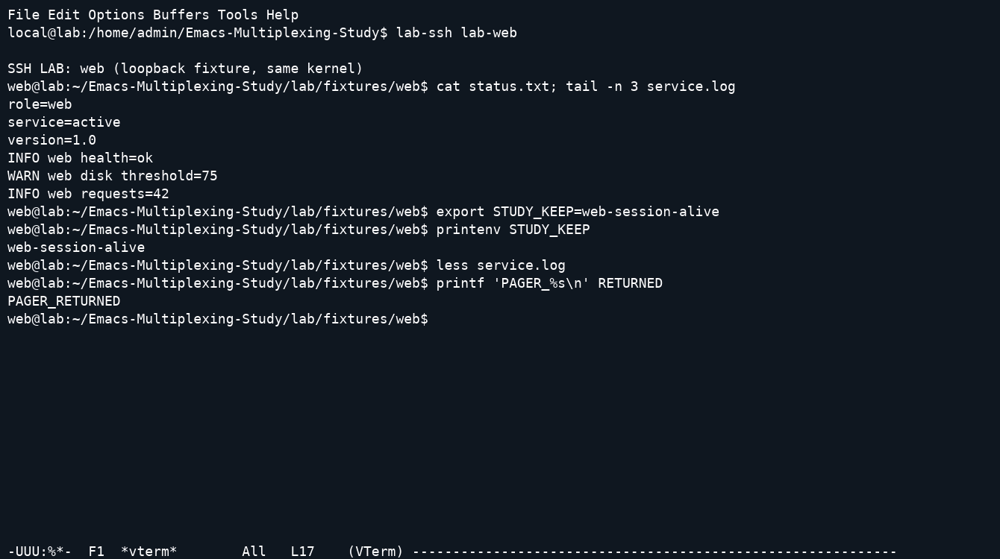

← Catalogo e videoTerminal emulator e multiplexer per Emacs
Studio del 26 settembre 2026. Il risultato è un catalogo ampio con snapshot dei sorgenti, analisi architetturali, prove osservabili e un laboratorio riproducibile. Non è una dimostrazione di completezza su tutti i progetti mai creati, né una certificazione end-to-end di tutte le voci del catalogo. Progetti cancellati, non indicizzati, privati o citati soltanto in configurazioni personali possono mancare. Le voci senza video lo dichiarano esplicitamente.
Aprire il catalogo con i player. I conteggi aggiornati sono generati dai risultati in summary.json; la tabella completa e leggibile anche su GitHub è CATALOGUE.md. Non sommare dipendenze, fork e alias per ottenere un presunto numero di emulatori indipendenti.
Risultati che servono a scegliere un workflow
Per lavorare alternando più SSH, molti progetti non richiedono un layout con pannelli: un terminale per buffer e il normale C-x b bastano. I gestori aggiungono nomi, scope per progetto, cycling, popup o layout. Le prove riuscite verificano che la shell del server web conservi una variabile mentre si lavora sul server db e che la si ritrovi tornando indietro.
| Esigenza |
Famiglie/progetti da confrontare |
Cosa dimostra questo studio |
| Terminale interattivo nel buffer |
term/ansi-term, Eat, vterm, Ghostel, Ebb, Alacritty, Kuro, Cooked, MisTTY, Coterm |
Due SSH, output riconoscibile, ritorno alla stessa shell; pager nei profili appropriati |
| Creare e ritrovare buffer |
multi-term, multi-vterm, multi-buf, multi-buffer, term-manager, term-control, vtermux |
Scenario registrato e modalità effettiva nelle snapshot |
| Layout e finestre |
ghostel-mux, tab-bar, ElScreen, Eyebrowse |
Cambio contesto mantenendo i processi; nessuna persistenza dopo chiusura dedotta dal layout |
| Riattaccare processi dopo l'uscita di Emacs |
tmux annidato in vterm, tmux-control, term-sessions/zmx |
Chiusura reale di Emacs, nuovo processo Emacs e recupero della variabile della shell originale |
| Richiamare velocemente una shell |
shell-pop, vterm-toggle, eshell-toggle, popterm, toggle-term, term-toggle |
Apertura/selezione con le differenze strutturali dichiarate nei copioni |
| Amministrazione con output lineare |
shell, Eshell, friendly-shell, better-shell, multi-shell |
Baseline utili; non presentati come emulatori VT completi |
| Controllare terminali esterni |
emamux, tmux.el, tmuxmacs, turnip, screensend, zellij.el |
emamux dimostrato come controller; tmux-view come viewer. Gli altri hanno analisi/probe senza attribuire un renderer in-buffer inesistente |
La distinzione importante è chi possiede il processo. Nei terminali ordinari il processo dipende da Emacs; un gestore di finestre può soltanto conservarne la visibilità mentre Emacs rimane vivo. Nei test di persistenza il processo è posseduto da un server tmux o zmx separato. Il riavvio di Emacs è realmente avvenuto, non è una semplice chiusura del buffer.
Metodo di studio del codice
Le revisioni sono elencate in source-lock.json. Il bundle completo contiene il codice acquisito, non solo link a HEAD mobili. Per ogni progetto la scheda riporta architettura, utilizzo, limiti, stato del caricamento e risultato delle prove disponibili. Gli indici danno punti di ingresso, require, opzioni e keymap con numeri di riga; sono generati automaticamente e non sostituiscono una revisione manuale di ogni riga.
La lettura architetturale si è concentrata su creazione del processo/PTY, parser, aggiornamento del buffer, routing dei tasti, registro delle sessioni e durata dei processi. Gli estratti di supporto sono in research/review-*.txt. Non è un audit di sicurezza, né una prova formale o una revisione completa di tutti i test upstream.
Esempi concreti nel codice incluso:
sources/vterm/vterm-module.c: vterm_input_write alimenta libvterm; le celle sono lette attraverso vterm_screen_get_cell. Il modulo registra l'interfaccia Lisp in emacs_module_init.sources/alacritty/src/lib.rs: il codice dello snapshot affida il PTY a Emacs e riceve output tramite filtro; il modulo Rust gestisce alacritty_terminal. Non va descritto come finestra dell'applicazione Alacritty inglobata.sources/cooked/src/lib.rs e moduli pty, session, emu: il core registra funzioni Lisp e mantiene stato del processo e degli aggiornamenti; il comportamento dei tasti cambia quando il processo richiede input raw.sources/kuro/rust-core/src/parser.rs, ffi/bridge/render.rs e emacs-lisp/rendering/: parsing e trasporto/rendering sono livelli distinti.sources/ghostel/src/GhostelTerm.zig, Renderer.zig, PosixPtyProcess.zig e Lisp: backend terminale, resa e processo sono separati. Il test usa il modulo della release corrispondente.sources/libgterm/src/gterm.zig: renderer che percorre le celle dello schermo Ghostty. È un progetto separato da Ghostel anche se usa la stessa famiglia di motore.sources/mistty/mistty.el: buffer di lavoro, buffer terminale, sincronizzazione e passaggio allo schermo intero spiegano perché editarne l'input non equivale a inviare ogni tasto direttamente al PTY.sources/multi-buffer/multi-buffer.el: rinomina e registro per major-mode, senza launcher/cycler proprio. Lo snapshot non fornisce la feature omonima; il profilo dimostrativo usa load esplicito.sources/tmux-control/ e sources/tmux-control-mode/: entrambi usano il protocollo di controllo tmux ma hanno renderer e UI diversi. Il secondo fornisce tmux-cc, nome usato anche da un terzo progetto di wcy123: il probe controlla la provenienza della libreria.
Scenario amministratore di sistema
Il laboratorio avvia due sshd non privilegiati su 127.0.0.1, porte 22461 e 22462, con identità host fissata e chiavi effimere del test. Alias: lab-web e lab-db. Sono due endpoint SSH reali sullo stesso host e kernel, non due macchine indipendenti. La shell forzata presenta fixture deterministiche: status.txt e service.log. Non vengono usate credenziali dell'utente e non si modifica ~/.ssh.
Il workflow comune è:
- Avviare Emacs
-Q -nw con il profilo del progetto. Vertico e Marginalia sono caricati e abilitati prima di ogni comando.
- Aprire il terminale attraverso
M-x e i prompt reali, senza chiamate Lisp nascoste per costruire la demo.
- Digitare
lab-ssh lab-web, quindi cat status.txt; tail -n 3 service.log.
- Conservare
STUDY_KEEP=web-session-alive nella shell remota.
- Creare una seconda sessione con il comando/prefisso appropriato; collegarsi a
lab-db e controllarne stato e log.
- Tornare al primo terminale con il comando del pacchetto o
C-x b; printenv STUDY_KEEP deve produrre la variabile precedente.
- Dove il profilo è un emulatore completo, aprire
less service.log, uscire con q e verificare un nuovo output della shell.
- Nei copioni specifici tmux/zmx, uscire da Emacs, verificare la sessione esterna e riattaccarsi da un altro Emacs.
passed significa che le asserzioni di quello scenario sono riuscite. Non significa compatibilità universale con ncurses, Unicode complesso, mouse, immagini, clipboard, latenza di rete, TRAMP, resize arbitrari o perdita di connettività. Nessuna classifica di throughput è ricavata da queste registrazioni. I confronti prestazionali pubblicati da upstream/Reddit non sono stati riutilizzati come misure nostre.

Fotogramma ricostruito dagli eventi reali del cast con pyte e FFmpeg; mostra il ritorno alla shell web e l’uscita dal pager. La registrazione completa è nel catalogo.
Tasti: cosa è davvero predefinito
Non sono state create rimappature globali per uniformare artificialmente i progetti. Quando il pacchetto non assegna un binding globale, si usa M-x nome-comando RET: questo è un uso umano dei comandi pubblici, non un'interfaccia appositamente costruita. Gli hook e le opzioni necessarie sono visibili in scripts/scenarios.py e config/init.el.
| Contesto |
Sequenza osservata o usata |
| Nuova istanza vterm/Eat/Ghostel/MisTTY |
C-u M-x … RET |
| Più shell comint |
C-u M-x shell RET, poi nome del nuovo buffer |
| term/ansi-term |
C-c C-j verso editing Emacs, C-c C-k verso input caratteri |
| Cooked con input remoto raw |
C-c M-x per il comando Emacs |
| ghostel-mux |
C-b c e C-b p |
| tmux annidato |
C-b c e C-b p, interpretati da tmux |
| tmux-control |
M-x tmux-control-new-window, C-c C-p |
| Tab-bar |
C-x t 2, C-x t O |
| ElScreen |
C-z c, C-z p, dopo aver restituito i tasti a Emacs |
| Buffer generico |
C-x b, nome, RET |
Ogni scheda dimostrata include una sequenza completa con timestamp e una traccia dei byte inviati. Non confondere i binding suggeriti nei README con quelli già attivi. Vertico e Marginalia rimangono abilitati anche se un progetto usa una UI separata Helm; tale UI non viene sostituita surrettiziamente.
Esiti negativi e correzioni del laboratorio
Le versioni precedenti di risultati, tasti e cast sono in results/attempts/. Lo smoke test nel contenitore pulito è riuscito dopo aver corretto anche la directory del socket tmux, che deve essere la stessa prima e dopo il riavvio del client. Il primo tentativo negativo e quello corretto sono entrambi conservati. Le correzioni hanno riguardato il copione o la preparazione, senza correggere silenziosamente il codice upstream:
- terminfo di Eat/Ghostel/Ebb mancanti sul remoto impedivano un pager corretto: ora vengono compilate con
tic e rese disponibili ai due endpoint.
term-run mostra il buffer in un'altra finestra: occorre C-x o prima di digitare.- il socket del server Emacs, sotto un percorso XDG molto lungo, superava il limite Unix: ora usa una directory privata più corta.
- dipendenze normalmente caricate da autoload, come vterm per alcuni wrapper, sono caricate esplicitamente nel profilo isolato.
- il copione iniziale confondeva
C-x t p con il tab precedente; il default corretto usato nella prova è C-x t O.
Restano scenari negativi espliciti, fra cui riuso del buffer in vtplex, riferimento a ghostel--all-buffers assente nello snapshot di Ghostel per ghostel-switch, routing term+ non gestito correttamente dal copione generico e focus non recuperato nel caso tmux-control-mode. Le schede e i traceback circoscrivono ciò che è successo: un errore di copione non viene presentato come una conclusione generale sull'affidabilità del progetto.
Copertura non completata
Non è stata prodotta una dimostrazione per ciascuna voce: i progetti GUI EAF, i motori Windows, diversi controller di multiplexer esterni e vari pacchetti storici hanno analisi/probe ma non una prova end-to-end. libgterm ha un tentativo di build documentato, non un modulo funzionante. Alcune voci irrisolte sono solo URL candidati falliti. Il catalogo espone not-run invece di attribuire risultati dei componenti sottostanti al wrapper.
Sono quindi consegnati strumenti estendibili, prove effettive e un inventario delle lacune, senza dichiarare soddisfatto il requisito letterale “ogni progetto mai creato, tutti eseguiti”. Per l'elenco puntuale filtrare not-run nel catalogo. La ricerca e le esclusioni sono descritte in SEARCH.md; la procedura eseguibile è in REPRODUCE.md.